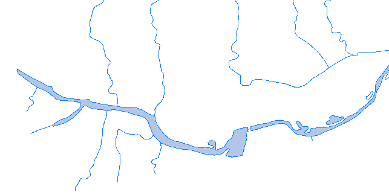
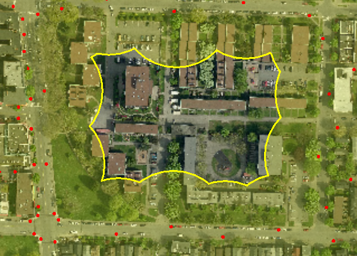
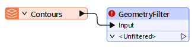
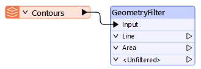
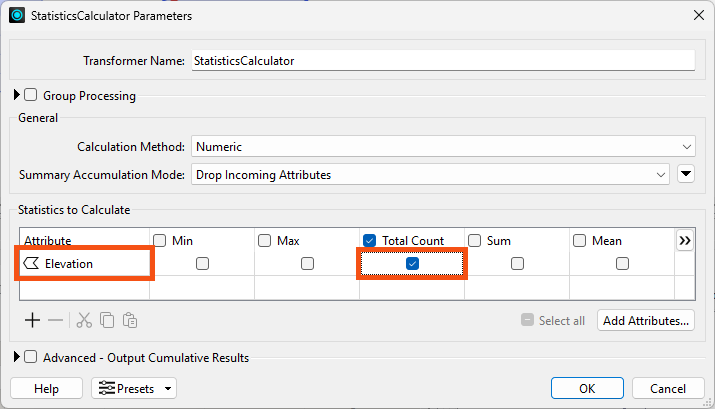
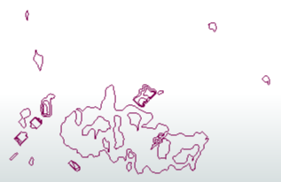
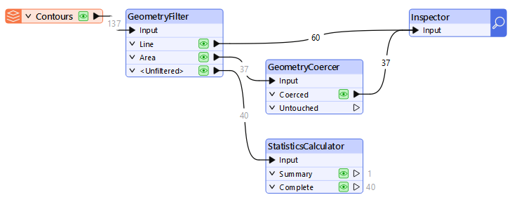

After completing this lesson, you’ll be able to:
FME provides a wide range of geometry transformers. You can group these by their functionality:
Filtering Transformers
Coercing or Setting Geometry
Editing Geometry
Building and Creating Geometry
Extracting Components
Invalid geometry types are where the type of geometry is invalid for the class of feature that it represents; for example a bicycle path is represented by a point geometry, or a river is represented by a polygon geometry (like below):

Whether such a geometry is truly invalid depends on both the user's interpretation of the data and any special circumstances. For example, the scale of the data might be such that both sides of the river bank are captured (as above), therefore a polygon is a perfectly legitimate geometry type.
Invalid geometry types also covers any special rules that an organization may have, to permit situations that would usually be invalid. For example, a mapping organization may decree that a street lighting column is not stored by a point feature at its core location, but instead is stored as a polygon representing the extent of the acceptable lighting level (like below):

In general FME can identify problem features easily using a GeometryFilter transformer and - in some cases - can fix problems using a GeometryCoercer.
The source dataset for this example is a (supposed) set of lines (in a GML dataset) representing contours.
The dataset looks like this in the FME Data Inspector:
The scenario here is that we have many contour files and wish to set up checks for bad geometry types using this single file as a prototype. As you can see, contours that form a closed shape were created as polygon features. Additionally, not only are there contours, but also spot height points and who knows what other types of geometry. These features need either filtering or fixing using FME.
Follow these steps to learn how to identify contour features that have an invalid geometry type.
1. Create workspace
Start FME Workbench (2024.2 or later) and click New to begin with an empty canvas.
Select Readers > Add Reader from the menubar. In the dialog that opens set the data format to OGC GML (Geography Markup Language).
Set https://s3.amazonaws.com/FMEData/FMEData/Resources/IntegrateSpatialData/ContoursO8.gml as the source Dataset.
Click OK to close the dialog and add the reader.
2. Add a GeometryFilter transformer
Connect it to the GML reader feature type.

3. Set GeometryFilter parameters
Open the GeometryFilter parameters dialog. Here we can define which geometry types to filter under the Output Ports parameter. Click the ellipsis button and then select "Line" because contours are by nature line features. We should also select "Area" because we know area features exist and that they can be fixed.
Click OK and OK again to close the dialogs. The workspace now looks like this:

Any geometry that isn't a Line or Area will be "Unfiltered".
4. Run the workspace and inspect the output
With Feature Caching enabled, run the workspace and inspect the output by clicking the GeometryFilter. The non-line features will be filtered, showing how to can now deal with them separately.
Counting the number of bad features is quite easy because we have already filtered them out. For example, even the Workbench feature counts show us there are 40 unfiltered features.
To create a count stored in an attribute is simple using the StatisticsCalculator transformer.
5. Add a StatisticsCalculator and connect it to the GeometryFilter:Unfiltered port
Open the parameters dialog. First select Elevation as the Attribute to Analyze. In truth it doesn't really matter which attribute we select, since we only want a count of features.
Click under the Total Count column to add a check-box. That will provide a count of the bad features.

Click OK to close the dialog.
Re-run the workspace. This time the features in the StatisticsCalculator's Complete port should include an attribute called Elevation.total_count that denotes how many bad features there are: 40.
Geometry types can be changed in FME using the GeometryCoercer. We've filtered out point features (and any other geometry types) because there is no simple way to turn them into a line feature. However, area features can very easily be changed from a polygon to a closed line.
6. Add a GeometryCoercer transformer
Connect it to the GeometryFilter:Area output port.
7. Set the GeometryCoercer parameters
Open the GeometryCoercer's parameters dialog. Set the Geometry Type to output to "fme_line".
Click OK to close the dialog and re-run the workspace. The result is a clean set of contours with no invalid geometry types:

8. Add an Inspector
Connect the GeometryFilter Line output port to it as well as the GeometryCoercer's Coerced output port. Make sure it is connected as shown. Re-run the workspace and inspect the Inspector output.

The output should look like this, with the invalid polygons coerced into lines:
Here are some other techniques for fixing invalid geometry types.
1. When the geometry is supposed to be an island (or donut) but the 'hole' is filled in (like below):
...then the DonutBuilder transformer would be the best solution.
2: When the geometry is supposed to be lines, but is an area (as in the step-by-step example) and the result is supposed to be a network (like these road features)...
...then the GeometryCoercer changes the area to a line, but it won't split it at node points. That would require the addition of an Intersector transformer.
3. The GeometryCoercer can turn a single closed line into a polygon feature, but it won't build polygons from a set of individual lines. That needs the AreaBuilder transformer.
For more tutorials on validating and fixing spatial data, see the Knowledge Base.